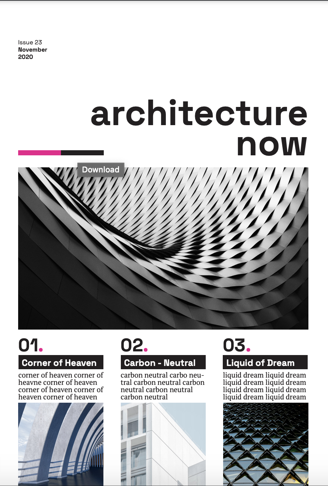

From Scratch, is a website dedicated mainly to design. Design is a form of Art band expression with a potential for problem solving. This space emphasises the idea of starting from scratch, from brainstorming and producing different interpretations of work from inspiring artists. Two projects from DGA1020 and DGA1901 will be shown and explained respectively
For DGA1020, the assignment was to create an illustration for representing Maltese doors. Doors, facades and balconies became the main focus for this project, eventually the idea was narrowed down to Maltese doors, a fasinating boundary. Experimentation was also done through colour schemes. The trials were inspired from pieces by MaltaType.
Started out by sketching from different facades around my home-town while also experimenting with some trials using references from MaltaType. For the inal piece a mixture of characteristics of the Maltese door were combined.


Main illustration references are,
MaltaType Te Fit-Tazza TorriThe idea behind this assignment was to be more familiariezed with the concept of poster design. Architecture Now was a great inspiration, therefore this magazine was chosen for interpretation. The aim was to experiment with fonts, spacing, columns, composition and overall design.
